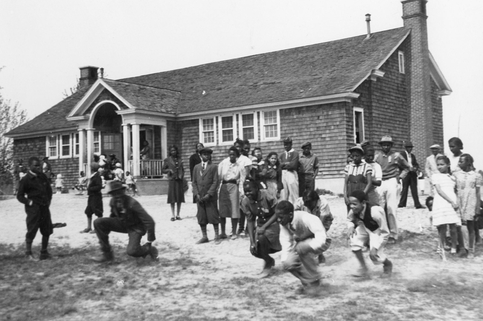
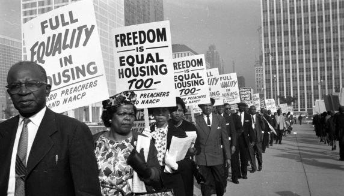

How did segregation influence education, housing, and voting rights?


Education
The 1954 Supreme Court decision in Brown v. Board of Education ruled that segregation in public schools was unconstitutional, however this did not end school segregation immediately. It was recived with resistance from some states and local communities.
Segregation in schools continued if a few places even after the 1954 trial, concentrating Black and Hispanic students in under-resourced schools with unequal learning opportunities.
The academic achievement gap between white and Black students is strongly associated with school segregation and limited funding.
Federal policies established and maintained residential segregation, rather than occurring naturally through private choices.
During the 1930s, the Federal Housing Administration and private lenders engaged in "redlining," which denied mortgages and insurance to people mainly in Black and minority neighborhoods.
Racial covenants were legal agreements that explicitly prohibited Black Americans from owning, leasing, or occupying homes in certain communities. These covenants were widely used until the late 1940s and created and maintained segregated neighborhoods.
Segregated neighborhoods also led to unequal living standards and concentrated poverty. These areas often lacked quality services, such as health centers, parks, and grocery stores, and were often exposed to higher levels of environmental hazards.
Poll taxes were fees required for a person to vote. They were used to prevent poor Black citizens from exercising their right to vote and were a common tactic for voter suppression.
Literacy tests, which were often unpredictable and confusing, were used to disqualify Black voters. The Voting Rights Act of 1965 finally outlawed these discriminatory practices.
Many southern states implemented the "grandfather clause," which allowed only those whose grandfathers had voted, the right to vote, effectively banning Black voters because most Black voters' grandfathers did not vote.